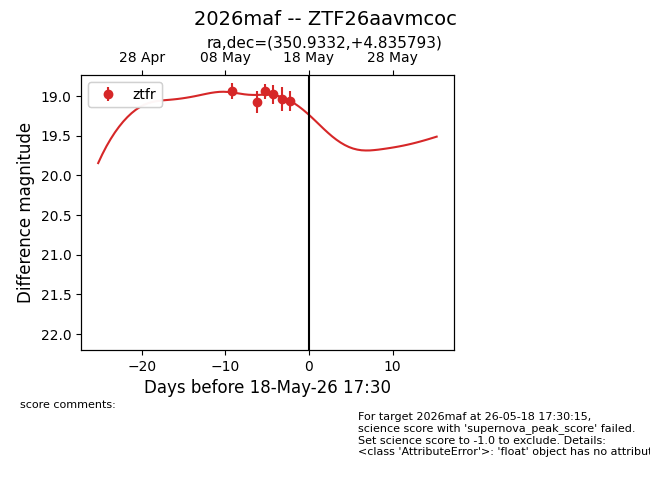
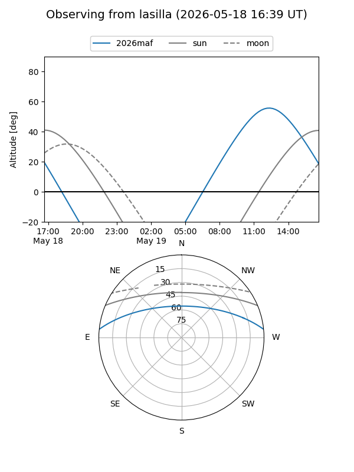
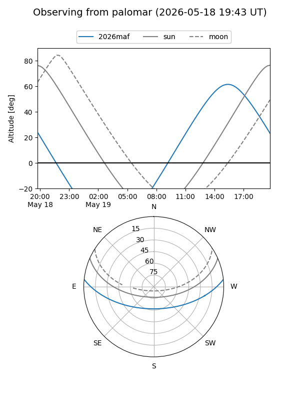
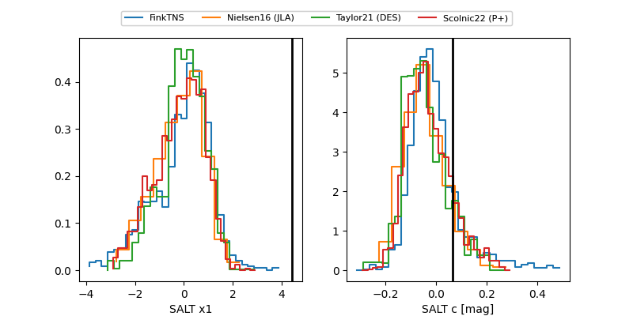

2026maf
Target 2026maf at 2026-05-18 17:32
Aliases and brokers:
FINK: link
Lasair: link
ALeRCE: link
TNS: link
YSE: link
alt names
ZTF26aavmcoc (ztf,fink_ztf)
2026maf (tns,yse)
Coordinates:
equatorial (ra, dec) = 350.9332,+4.83579
equatorial (HMS+DMS) = 23:23:43.97,+04:50:08.85
galactic (l, b) = (86.0847,-51.64974)
Flags:
Photometry:
last ztfr=19.06
6 ztfr detections
Lightcurve

Visibility


Additional plots
